Projektstart und Planung. Wir haben die Anforderungen und Ziele
des Projekts definiert und die Struktur der Webseite entworfen.
Dabei haben wir uns für ein modernes und responsives Design
entschieden, das auf CSS Grid und Flexbox basiert. Die Webseite
soll eine klare und übersichtliche Struktur haben und auf allen
Geräten optimal dargestellt werden.
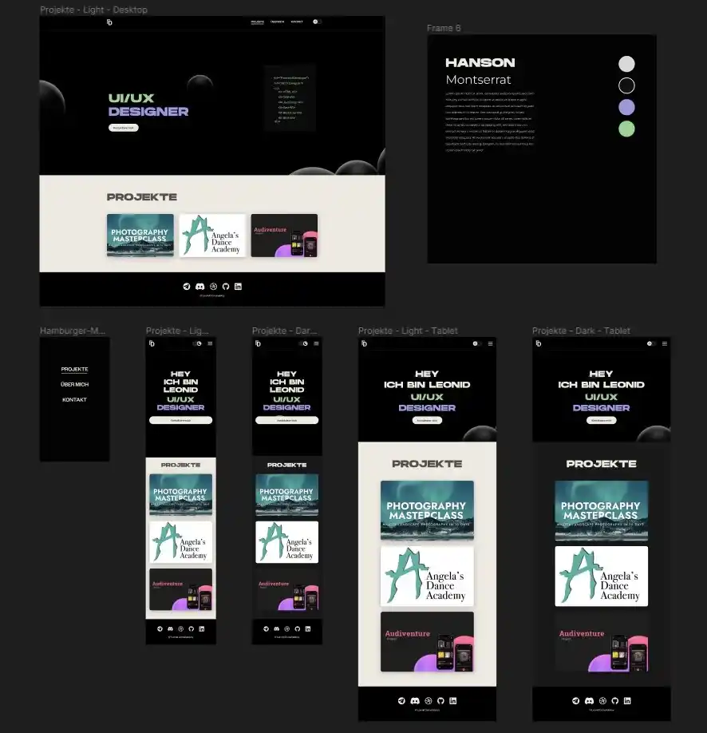
Erstes Layout der Startseite mit Grundstruktur und Farbwahl im
Light- und Darkmode für Smartphone, Tablet und Desktop
Auflösungen.
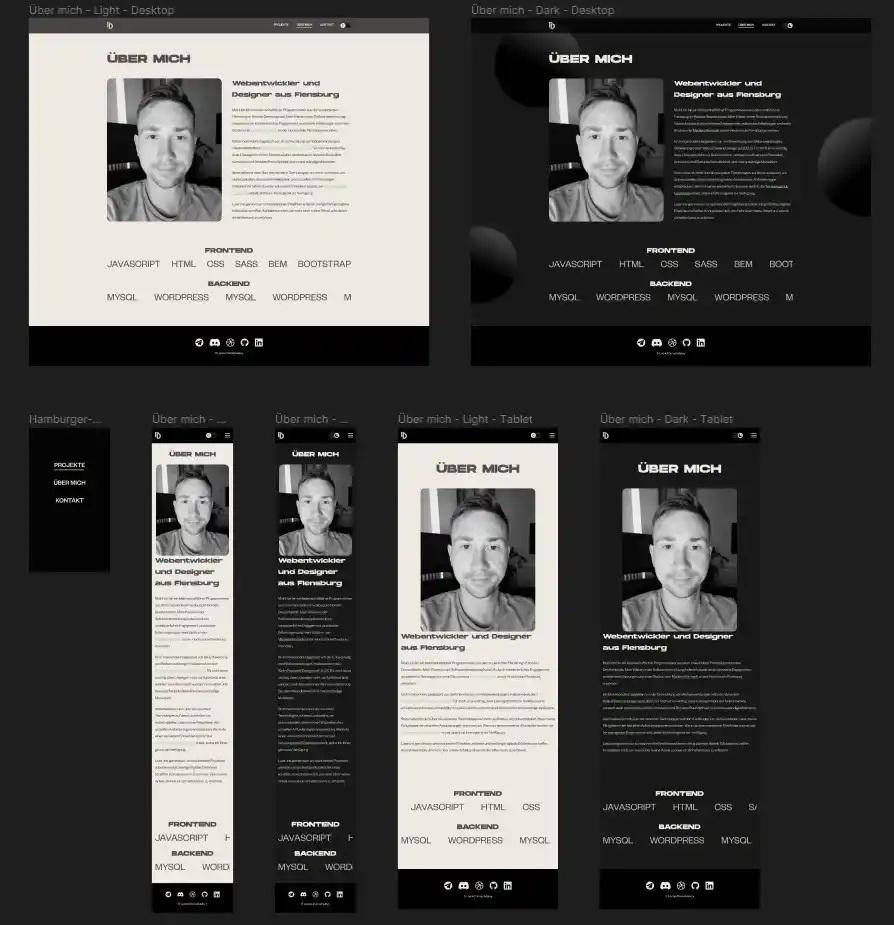
Erstes Layout der „Über mich“-Seite.
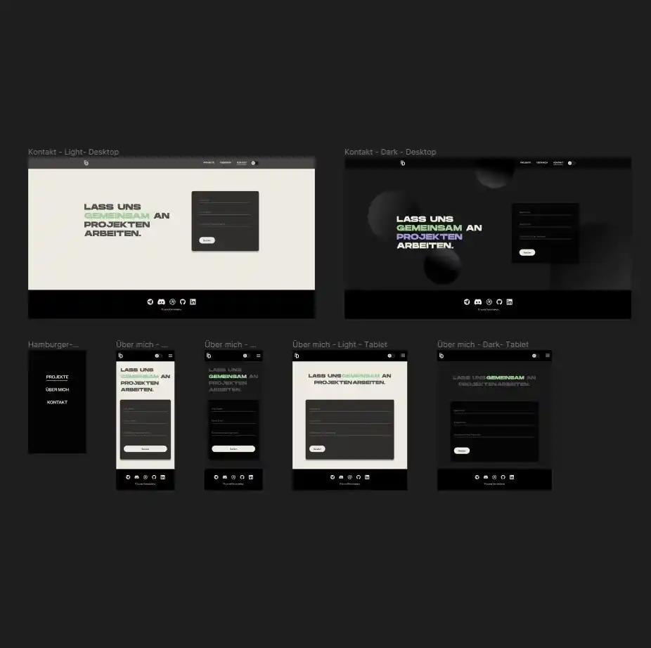
Erstes Layout der „Kontakt“-Seite.
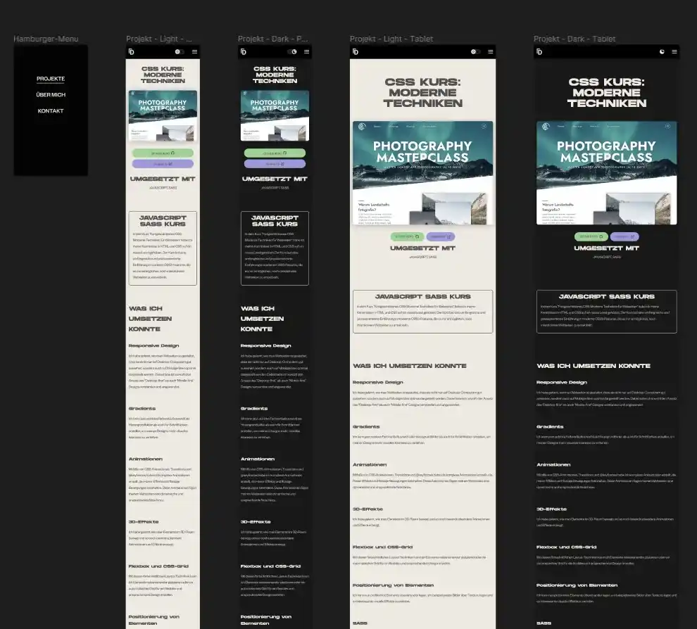
Erstes Layout der „Projekte“-Seite.
–
Typografie
Auswahl und Integration von Schriftarten. Wir haben die
Schriftarten Hanson und Montserrat als
@font-face in die CSS-Datei eingebunden. Dabei
wurden die Fonts in den Formaten .woff und
.woff2 eingebunden. Font-display wurde auf
swap gesetzt, um die Texte so schnell wie möglich
anzuzeigen.
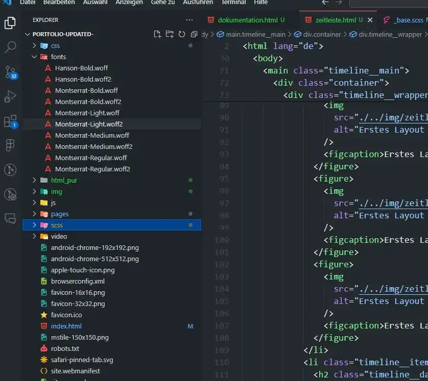
Übersicht über die Schriftarten im Fonts-Ordner.
Implementierung von Reset CSS und CSS-Variablen. Wir haben
zunächst ein Reset-CSS eingeführt, um eine konsistente Basis für
alle Browser zu schaffen. Anschließend wurden CSS-Variablen
definiert, um Farben, Schriftgrößen und Abstände zentral zu
verwalten und eine einfache Wartung und Anpassung des Designs zu
ermöglichen.
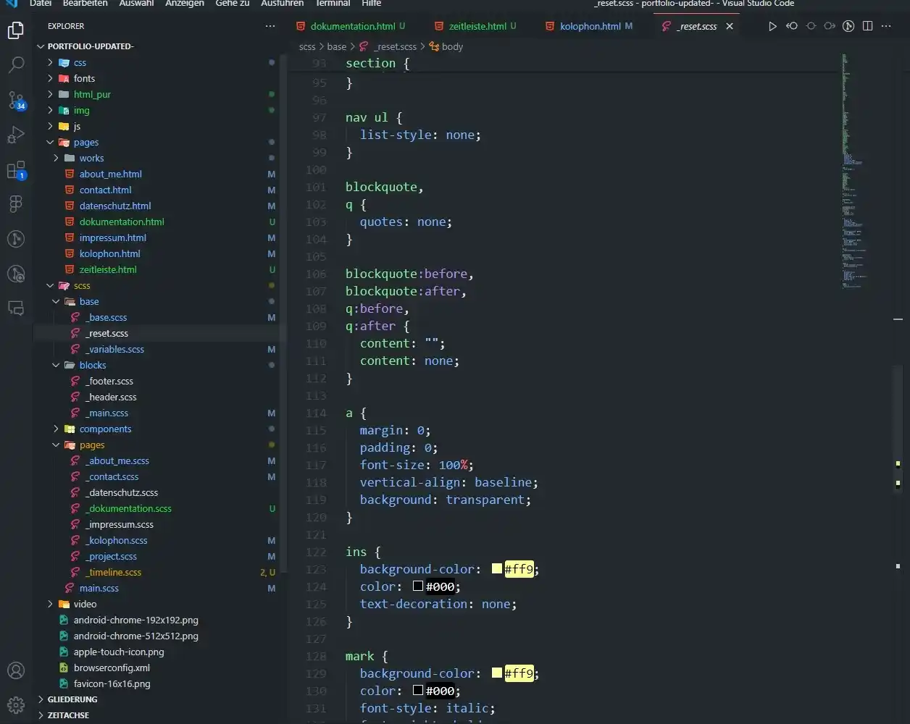
Eine Übersicht über die Reset-CSS-Datei und die definierten
CSS-Variablen.
Die CSS-Variablen wurden im :root-Element
definiert, um sie im gesamten Stylesheet zu verwenden. Die
Variablen wurden für Farben, Schriftgrößen, Schriftarten,
Schriftgewichte, Abstände und Animationen definiert.
–
Erste Implementierung
Erste Implementierung des Layouts und der Navigation. Wir haben
die Grundstruktur der Webseite erstellt, inklusive
Hauptnavigation, Header und Hauptinhaltsbereich. Die Entwicklung
begann mit der mobilen Auflösung und wurde für größere
Bildschirme erweitert. Dabei kam CSS Grid zum Einsatz, um eine
flexible und anpassungsfähige Struktur zu gewährleisten.
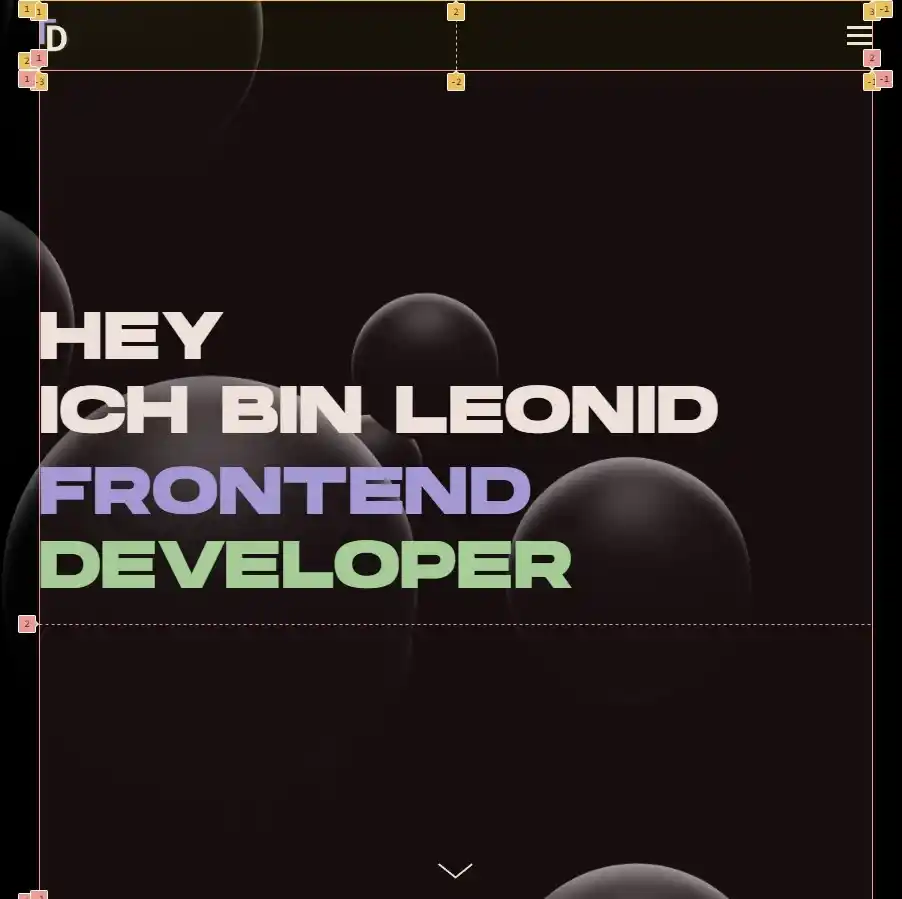
Die mobile Version des Headers und der Navigation.
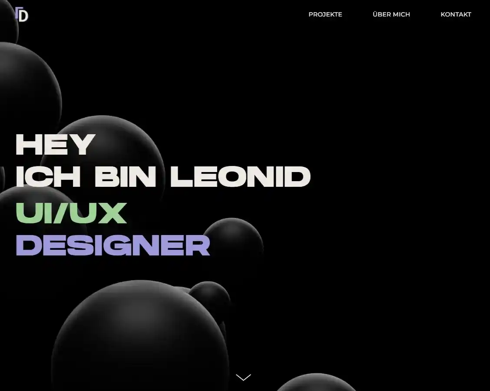
Die Desktop Version des Headers und der Navigation.
–
Umsetzung des Hauptinhalts
Umsetzung des Hauptinhalts und der Projekte. Die Projekte wurden
in einer Grid-Struktur angeordnet, um eine übersichtliche
Darstellung zu gewährleisten. Dabei wurden die Projekte in einer
oder mehreren Spalten angezeigt, abhängig von der
Bildschirmgröße des Geräts.
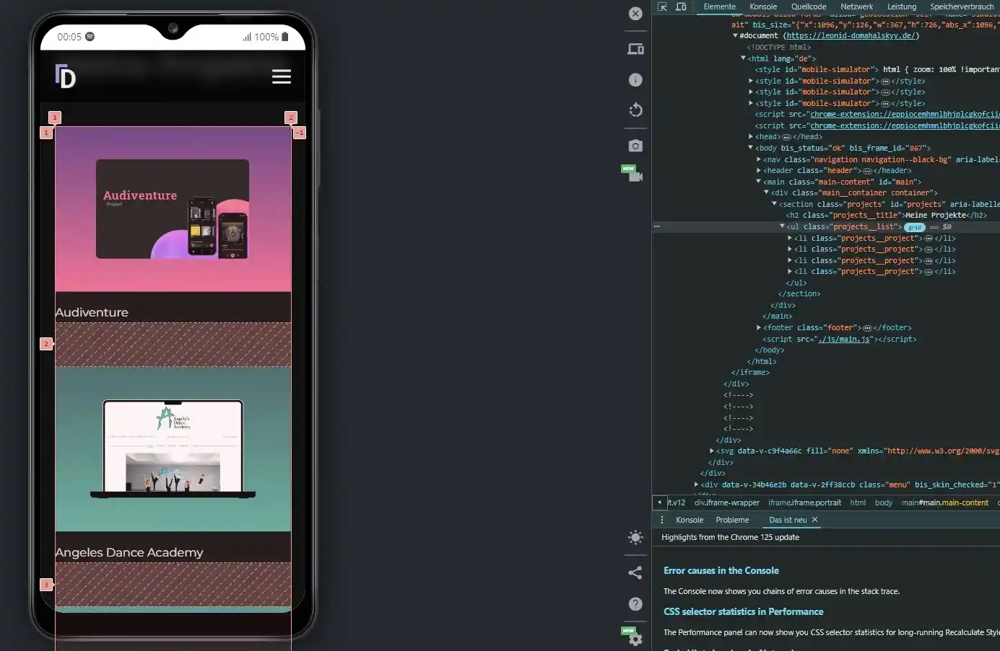
Die mobile Version des Mainbereichs. Im Inspektor ist die
Grid-Struktur zu sehen.
Auf mobilen Geräten wird ein Projekt pro Zeile angezeigt, auf
größeren Bildschirmen zwei oder drei Projekte pro Zeile.
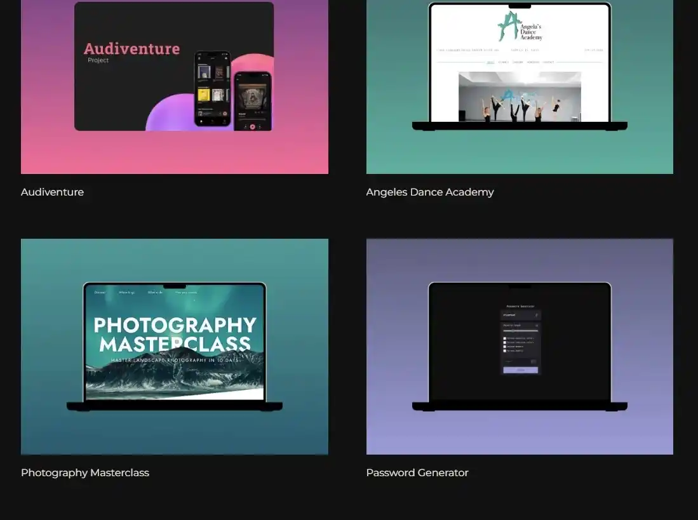
Die Tablet-Version des Mainbereichs. Die Projekte werden in 2
Spalten angezeigt.
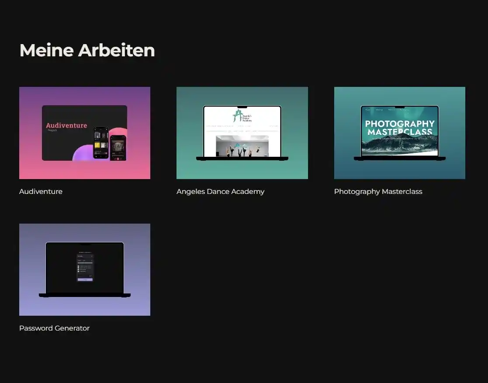
Die Desktop Version des Mainbereichs. Die Projekte werden in 3
Spalten angezeigt.
–
Implementierung des Footers
Der Footer wurde in mehrere Abschnitte unterteilt, darunter
soziale Medien, rechtliche Informationen und
Kontaktinformationen. Dabei wurde Flexbox verwendet, um die
Elemente zu positionieren und zu stylen. Die Listen wurden
zentriert und mit einem Hover-Effekt versehen.
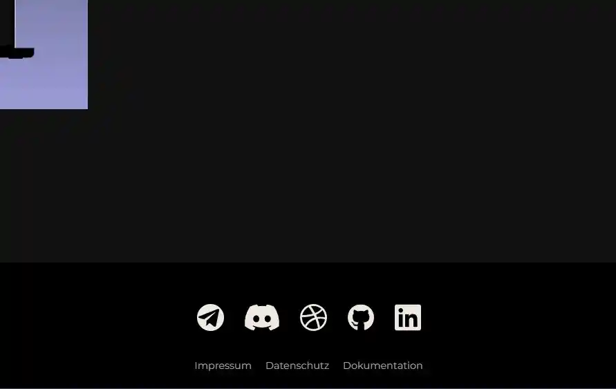
Der Footer mit sozialen Medien, rechtlichen Informationen und
Kontaktinformationen.
Grid als Hauptlayout für den Footer. Flexbox für die Listen.
–
Umsetzung der Funktion des Hamburger Menüs
Die Funktion des Hamburger Menüs wurde mit JavaScript umgesetzt.
Beim Klick auf das Hamburger Menü wird die Navigation
eingeblendet und das Hamburger Menü wird animiert. Beim Klick
auf einen Navigationslink wird das Hamburger Menü geschlossen.
Mit der Escape-Taste kann das Hamburger Menü ebenfalls
geschlossen werden.
const hamburger = document.querySelector(".navigation__hamburger");
const nav = document.querySelector(".navigation");
const navMenu = document.querySelector(".navigation__list");
const navContainer = document.querySelector(".navigation__container");
hamburger.addEventListener("click", () => {
hamburger.classList.toggle("navigation__hamburger--active");
navMenu.classList.toggle("navigation__list--active");
navContainer.classList.toggle("navigation__container--mobile");
});
document.querySelectorAll(".navigation__item").forEach((n) =>
n.addEventListener("click", () => {
hamburger.classList.remove("navigation__hamburger--active");
navMenu.classList.remove("navigation__list--active");
})
);
// Mit der Escape-Taste das Hamburger Menu schließen
document.addEventListener("keydown", (event) => {
if (event.key === "Escape") {
hamburger.classList.remove("navigation__hamburger--active");
navMenu.classList.remove("navigation__list--active");
}
});
Der JavaScript-Code für das Hamburger Menü.
–
Die Über mich Seite
Beim Meine Fähigkeiten Bereich auf der Über mich Seite wurde
wieder Grid benutzt für das Grundlayout. Für die einzelnen Level
wurde Flexbox benutzt. Die Seite wurde responsiv gestaltet.
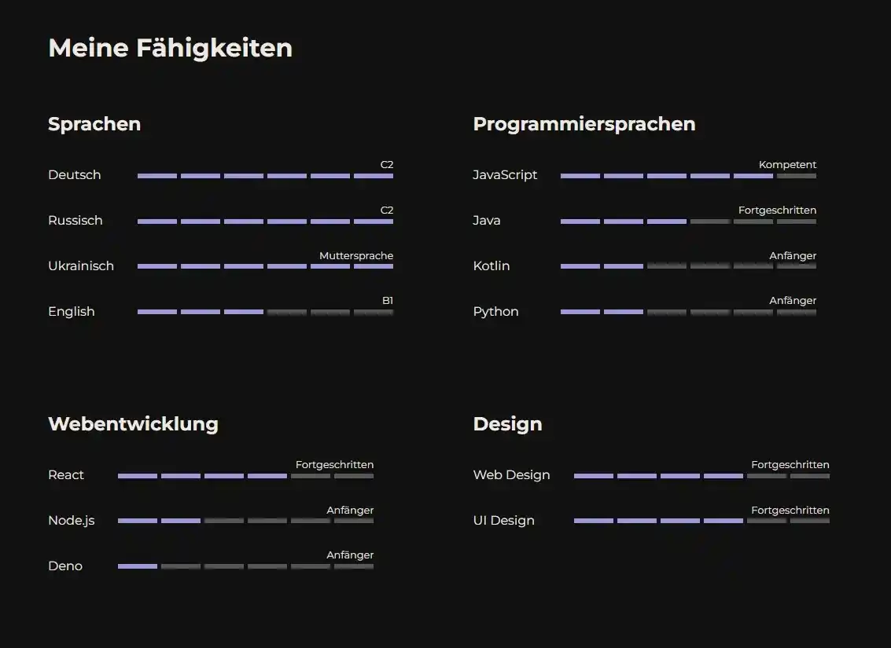
Übersicht der Fähigkeiten auf der Über mich Seite.
–
Kontaktformular
Das Kontaktformular wurde mit Grid erstellt. Die einzelnen
Felder wurden mit Flexbox gestaltet. Alle Inputs wurden mit
Labels verknüpft. Das Aussehen von textarea und
input wurde mit CSS angepasst. Die Seite wurde
ebenfalls responsiv gestaltet.
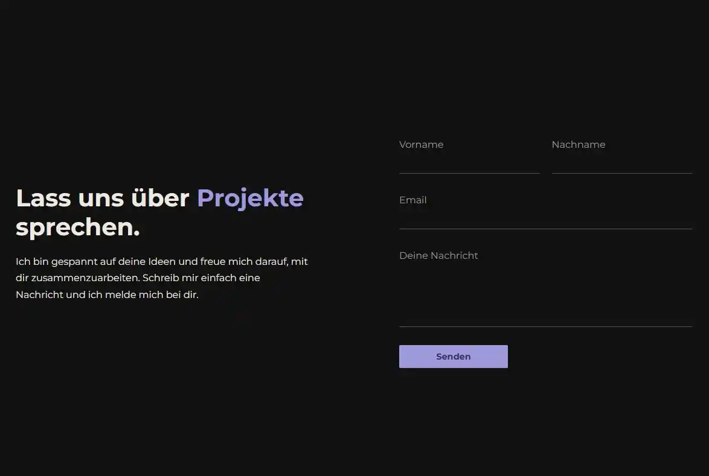
Das Kontaktformular mit den Feldern Name, E-Mail, Betreff und
Nachricht.
–
Testphase und Anpassungen
In der Testphase wurden alle Funktionen und Inhalte überprüft
und Anpassungen vorgenommen. Dabei wurde die Webseite auf
verschiedenen Geräten und Browsern getestet, um eine optimale
Darstellung und Funktionalität zu gewährleisten. Angefangen bei
einer Auflösung von 320px bis 1920px. Die Webseite wurde auf
Chrome, Firefox, Safari und Edge getestet. Dabei wurden die
Inhalte und die Navigation überprüft und gegebenenfalls
angepasst.
–
Finalisierung
Die Webseite wurde finalisiert und für die Abgabe vorbereitet.
Dabei wurden die letzten Anpassungen vorgenommen, um die
Performance zu optimieren. Die Webseite wurde bei einem
Webhoster hochgeladen und getestet, um sicherzustellen, dass
alles reibungslos funktioniert. Die JPG-Bilder wurden durch
WebP-Bilder ersetzt, die zusätzlich komprimiert wurden. Die
Webseite wurde auf Google PageSpeed getestet und mit dem W3C
Validator überprüft. Die CSS-Datei wurde minifiziert. Es wurden
die Dateien robots.txt und
sitemap.xml erstellt.
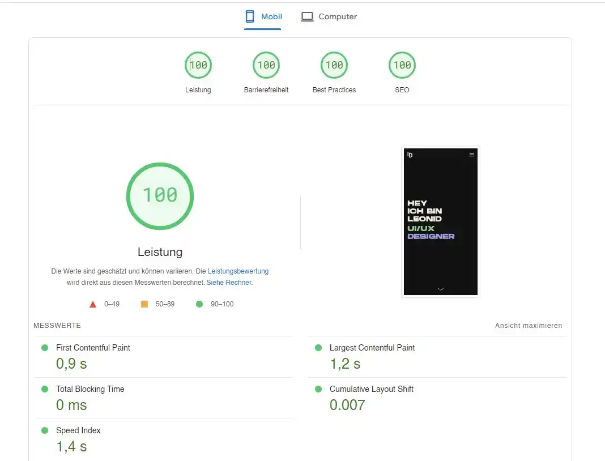
Ergebnis von Google PageSpeed
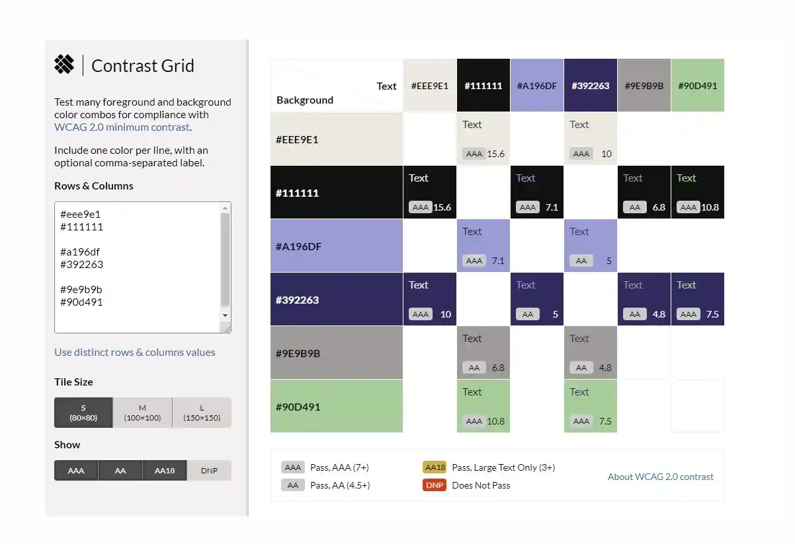
Ergebnis von Contrast-Grid